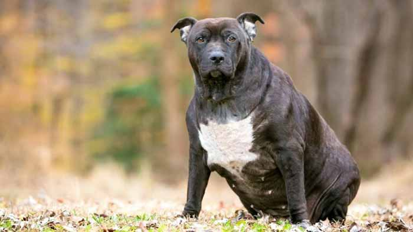
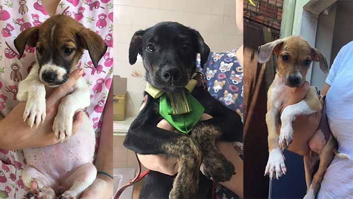
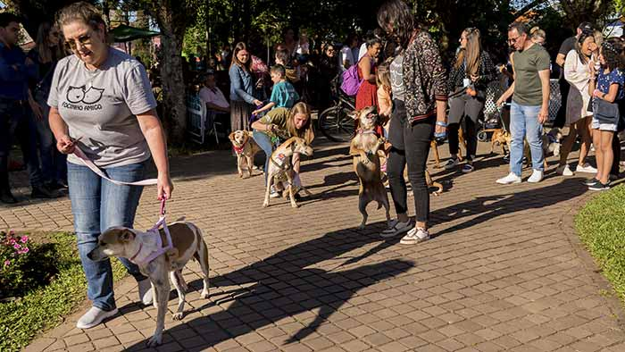
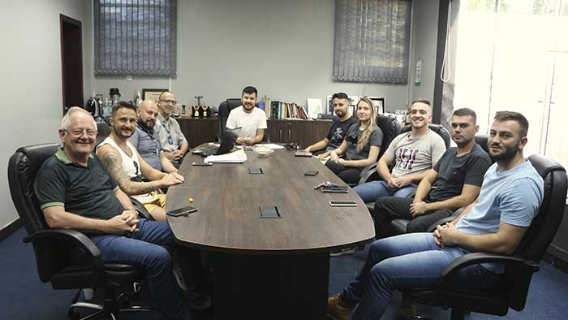

Lone Wolf
LoneWolf
Noticias do Mundo animal
| Pode os cachorros de Chernobyl nos ensinar novas formas de sobrevivência? |
A obesidade em pets é reflexo do comportamento alimentar dos tutores? |
São Leopoldo faz Feira de Adoção de Filhotes no sábado (28) |
|
 |
 |
| Doenças cardíacas também afetam cães e gatos |
Nova Petrópolis realiza 1º Pet Weekend neste final de semana |
Otite em cães: 5 fatos que você precisa saber |
|
 |
|
| Comitiva municipal é reunida para definir ações pela causa animal em Estância Velha |
Gatos também precisam ser vacinados |
Crescimento mundial do setor Pet já é uma realidade cada vez mais frequente |
|  |
|
|
Video representativo